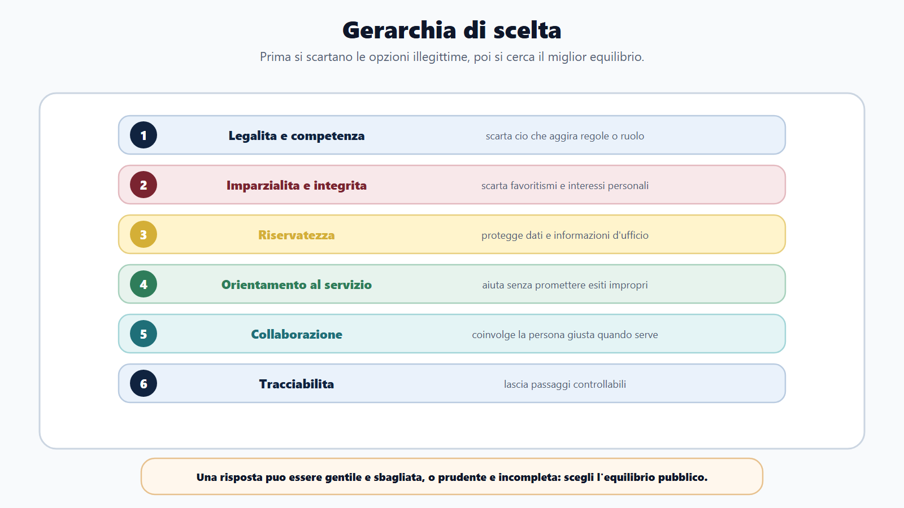
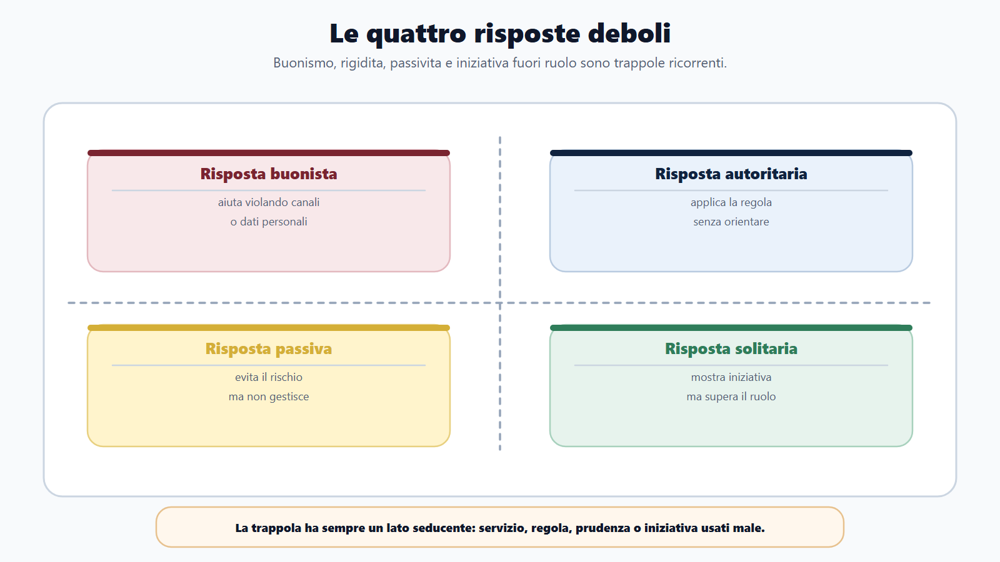
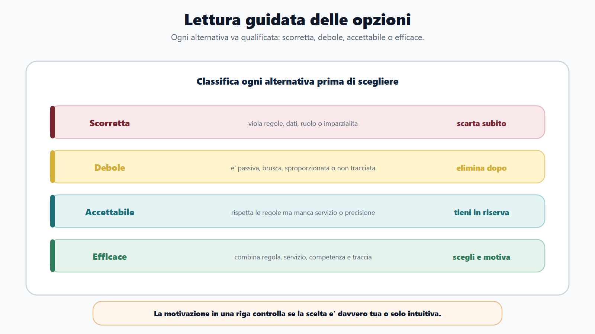
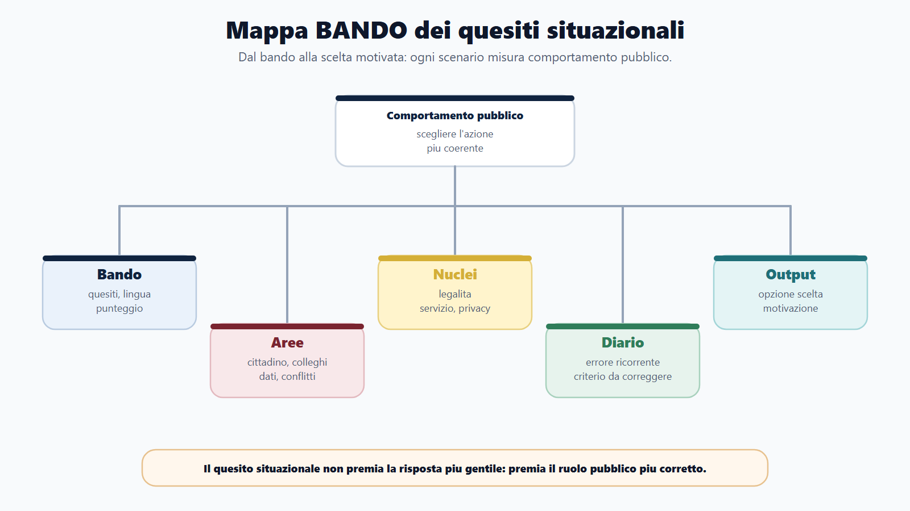
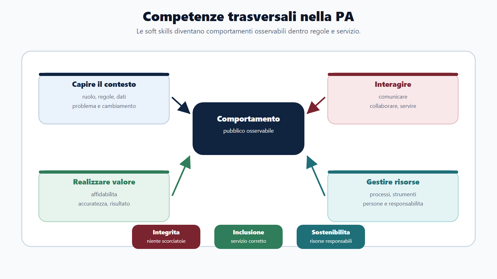
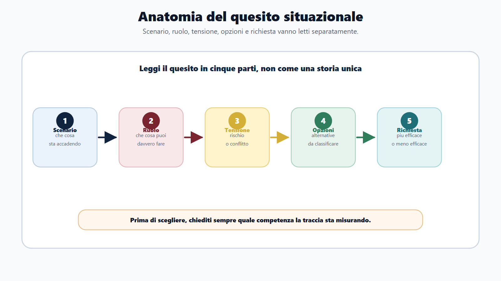

VOL-01 · Capitolo 18
Parte III · Allenarsi come in prova
Quesiti situazionali
e soft skills
Sembrano facili: una scena di lavoro e quattro comportamenti. Non misurano simpatia, carattere o moralismo. Misurano la capacità di agire dentro una pubblica amministrazione. Vince il comportamento pubblico, non il buon senso generico.
Schema
Gerarchia di scelta

Schema
Quattro risposte deboli

Schema
Lettura guidata opzioni

Schema
Mappa bando quesiti situazionali

Schema
Competenze trasversali pa

Schema
Anatomia quesito situazionale

01 · Perché non è buon senso
Né la più gentile, né la più rigida
Un cittadino chiede informazioni su una pratica intestata a un parente. La risposta empatica potrebbe essere «gliele do, così lo aiuto». Ma se quei dati non possono essere comunicati a quella persona, la risposta empatica è sbagliata. La risposta corretta sarà cortese, chiara, utile, e rispettosa di privacy e canali corretti.
Che cos’è
Uno scenario breve, un ruolo, una tensione, quattro o più opzioni, una richiesta: comportamento più efficace, meno efficace, più appropriato o più coerente. Stesso formato del quiz, distrattori costruiti sul comportamento.
A che serve in prova
Misura legalità, competenza, imparzialità, riservatezza, collaborazione, servizio al cittadino, tracciabilità e responsabilità. La risposta più efficace non è sempre la più veloce, né quella che «risolve tutto da soli».
Il framework delle competenze trasversali del personale non dirigenziale, approvato nel 2023, organizza quattro aree: capire il contesto pubblico, interagire, realizzare valore pubblico, gestire le risorse. Valori trasversali: integrità, inclusione, sostenibilità. Non è una poesia da memorizzare: è un criterio per confrontare le opzioni.
02 · BANDO
Dal bando alla scelta motivata
Se non sai motivare la scelta in una riga, non hai davvero capito il quesito. Il diario registra errori comportamentali, non solo «sbagliato».
| Che cosa controlli | Prodotto | Se la salti | |
|---|---|---|---|
| B — Bando | Sono previsti quesiti situazionali? Quanti? In che lingua? Con quale punteggio? | Scheda prova situazionale. | Li tratti come quiz di materia o come domande di carattere. |
| A — Aree | Cittadino, collega, responsabile, dati, conflitto, urgenza, servizio. | Mappa scenari. | Alleni un solo tipo di scena. |
| N — Nuclei | Legalità, imparzialità, privacy, collaborazione, servizio, responsabilità. | Criteri di scelta. | Scegli a intuito la risposta «più umana» o «più ferma». |
| D — Diario | Troppa rigidità, scorciatoia, passività, violazione privacy, conflitto? | Registro errori situazionali. | Ripeti lo stesso pattern di trappola. |
| O — Output | Quiz, mini-casi, spiegazioni delle opzioni, simulazioni a tempo. | Punteggio e razionali stabili. | Leggi le soluzioni senza saperle motivare. |
Nei quesiti situazionali vince il comportamento pubblico, non il buon senso generico.
Scenario tipo: sei in un ufficio con molte richieste. Un cittadino irritato non ha ricevuto risposta e chiede di parlare subito con il responsabile. Tu non hai accesso completo alla pratica. Ascoltare, verificare ciò che puoi, indicare il canale corretto e informare il responsabile se necessario: servizio, competenza, prudenza, tracciabilità.
03 · Competenze
Quattro aree, tre valori, un uso concorsuale
Il reclutamento pubblico non riguarda solo conoscenze tecniche. Per il concorso non devi imparare questa lista a memoria: la usi per capire che cosa rende una risposta migliore di un’altra. Integrità, inclusione e sostenibilità attraversano tutte e quattro le aree.
| Area | Traduzione per il candidato | Come si vede nelle opzioni |
|---|---|---|
| Capire il contesto pubblico | Ruolo, regole, procedura, cambiamento, dati, problemi. | L’opzione ignora il perimetro dell’ufficio o inventa una competenza. |
| Interagire nel contesto pubblico | Comunicare, collaborare, orientarsi al servizio, gestire emozioni. | Tono brusco, conflitto davanti al pubblico, chiusura senza orientamento. |
| Realizzare il valore pubblico | Affidabilità, accuratezza, proattività, risultato. | Risposta a intuito, errore nascosto, scadenza ignorata. |
| Gestire le risorse pubbliche | Processi, persone, strumenti e risorse in modo responsabile. | Password condivisa, fornitore informale, traccia assente. |
04 · Anatomia
Cinque pezzi da leggere separatamente
Non partire dalle opzioni. Sono costruite per attirare. Prima lo scenario, poi il tuo ruolo, poi la tensione, poi ciò che viene chiesto (più efficace, meno efficace, più appropriato). Solo allora le alternative.
Scenario
Ufficio, cittadino, collega, dato, urgenza. Che cosa è accaduto, non che cosa proveresti tu nella vita privata.
Ruolo
Che cosa puoi fare da quella posizione. Non sei il responsabile se la traccia dice che non lo sei.
Tensione
Servizio contro privacy, urgenza contro procedura, collaborazione contro imparzialità.
Richiesta
Più efficace non è «più gentile». Meno efficace spesso è la scorciatoia che sembra utile.
Leggere le opzioni prima della scena. Nei situazionali, come nei quiz, le alternative sono costruite per attirare chi salta la consegna.
05 · Gerarchia
Sei filtri, in quest’ordine
Quando hai dubbi, non parti dal tono. Parti dalla legalità. Un comportamento molto collaborativo ma indiscreto è scorretto. La legalità, però, non significa freddezza: la risposta corretta deve essere anche chiara, rispettosa e utile.
1–2 Legalità e imparzialità
Rispetta regole, ruoli, competenza? Tratta persone e interessi in modo imparziale, senza favori a amici, insistenti o colleghi?
3 Riservatezza
Protegge dati e informazioni d’ufficio? Senza titolo, anche l’aiuto è scorretto.
4–5 Servizio e collaborazione
Aiuta a trovare il percorso corretto? Coinvolge la persona giusta? Risolvere tutto da soli può essere fuori ruolo; scaricare tutto, altrettanto.
6 Tracciabilità
Lascia traccia e consente controllo? Comunicazioni, segnalazioni, istruzioni, passaggi di pratica.
04 · Quattro trappole
Buonista, autoritaria, passiva, solitaria
Le opzioni deboli non sono assurde. Sembrano ragionevoli. Impara a classificarle prima di scegliere: scorretta, debole, accettabile, efficace.
| Trappola | Come si maschera | Perché cade |
|---|---|---|
| Buonista | «Gli fornisco subito tutte le informazioni sulla pratica del familiare per evitare disagi.» | Aggira titolo, delega, privacy e canale corretto. |
| Autoritaria | «Dico che non posso aiutarlo e chiudo.» | Rispetta la regola ma non orienta verso ufficio o procedura. |
| Passiva | «Aspetto che il responsabile se ne accorga.» | Evita il rischio ma non gestisce il problema quando puoi segnalare o instradare. |
| Solitaria | «Decido personalmente come trattare la pratica anche se non è mia.» | Iniziativa fuori perimetro: sembra efficace, supera ruolo e competenza. |
05 · Esempi 1–4
Utente, dati, collega, conoscente
In ciascuno, la risposta efficace unisce ascolto o collaborazione con canale corretto. Le altre opzioni promettono, chiudono, o aggirano.
| Scenario | Più efficace | Perché cadono le altre |
|---|---|---|
| Cittadino irritato per un ritardo; non sei il responsabile, puoi consultare informazioni generali. | Ascoltare, verificare il consultabile, indicare il canale, segnalare il sollecito se necessario. | Mandarlo via è passivo. Promettere la conclusione entro domani non dipende da te. Dare il numero personale del responsabile è un canale non istituzionale. |
| Telefono: chiede dati della pratica del fratello, dice di essere autorizzato, nessun documento. | Spiegare che servono canali e verifiche, indicare come presentare delega o richiesta. | Fornire i dati è rischioso. Rifiuto secco è troppo rigido. Chiedere al collega se «conosce il fratello» è informale e incerto. |
| Collega nuovo sbaglia la protocollazione, il ritardo incide sul gruppo. | Confronto collaborativo, procedura corretta, coinvolgere il responsabile se continua o ha impatti rilevanti. | Ignorare è passivo. Correggere di nascosto nasconde. Chiedere subito una sanzione è sproporzionato. |
| Un conoscente chiede di «dare un’occhiata» per velocizzare. | Non trattare informalmente pratiche di conoscenti; indicare i canali ufficiali. | Consultare fuori canale, far controllare un collega, promettere senza traccia: favoritismo, accesso improprio, opacità. |
06 · Esempi 5–8
Errore, carico, regola non chiara, conflitto
Accuratezza e servizio valgono più della risposta improvvisata. Proteggere il servizio e l’immagine dell’ente vale più di prendere posizione davanti al pubblico.
| Scenario | Più efficace | Distinzione |
|---|---|---|
| Hai inviato a un ufficio interno una comunicazione con un dato non necessario. | Informare il responsabile secondo le procedure, descrivere l’accaduto, collaborare alla correzione. | Non dire nulla, cancellare l’email o chiedere di far finta di nulla coprono il problema. |
| Troppe pratiche, scadenza ravvicinata, un collega chiede aiuto non urgente. | Spiegare la priorità, proporre un momento successivo o un supporto limitato, informare il responsabile se il carico compromette il servizio. | Accettare e saltare la scadenza, rifiutare bruscamente, lasciare tutto in sospeso. |
| L’utente vuole una risposta immediata su un requisito; non sei sicuro. | Chiarire che serve verifica, consultare fonte o responsabile, indicare tempi o canale affidabile. | Rispondere a intuito, chiudere con «non so», mandarlo a cercare online senza orientarlo. |
| Due colleghi discutono davanti al pubblico su chi debba gestire una pratica. | Spostare il confronto fuori dall’area pubblica, mantenere il servizio, chiarire poi competenza con il responsabile. | Prendere posizione davanti agli utenti, ignorare, dire che l’ufficio è disorganizzato. |
07 · Allenamento e diario
Scegliere e scrivere una riga di motivazione
Routine: leggi lo scenario, individua il ruolo, segnala il rischio principale, elimina opzioni illegittime o scorrette, elimina passive o sproporzionate, scegli l’opzione più equilibrata, scrivi una riga di motivazione. Dopo dieci quesiti, guarda la categoria più frequente.
| Errore | Segnale | Che cosa alleni dopo |
|---|---|---|
| Troppa empatia / privacy | Aiuti violando canali, dati o procedure. | Privacy, imparzialità, canali. |
| Troppa rigidità | Rispetti la regola ma non orienti nessuno. | Orientamento al cittadino. |
| Passività | Aspetti che altri risolvano anche quando puoi segnalare. | Instradamento e responsabilità. |
| Invasione di competenza | Agisci fuori ruolo per sembrare efficace. | Ruoli e perimetro. |
| Conflitto / stress / comunicazione | Favori, risposta brusca, scelta più rapida invece della più corretta. | Imparzialità, tono, tempo. |
08 · Mini-drill
Cinque situazioni, due righe ciascuna
Scrivi il comportamento più efficace. Poi confronta con la traccia: nessuna corsia preferenziale; password mai condivisa; dati di terzi solo con titolo; urgenza secondo procedure; errore da segnalare, non da nascondere.
| Situazione | Traccia di correzione |
|---|---|
| Un cittadino chiede una corsia preferenziale perché conosce un assessore. | Canali ordinari e imparzialità. Nessun favore, spiegazione chiara del percorso corretto. |
| Un collega ti chiede la password per «fare prima». | Mai condivisa: sicurezza e responsabilità personale. Si cerca un canale legittimo, non una scorciatoia. |
| Un utente vuole sapere dati di un’altra persona. | Solo con titolo e canale corretto. Cortesia e istruzioni, non chiusura secca né diffusione. |
| Il responsabile non è presente e arriva una richiesta urgente. | Procedure e scala di responsabilità. Niente promesse, niente decisioni fuori ruolo. |
| Ti accorgi di un errore in una comunicazione già inviata. | Segnalare e correggere secondo le procedure interne, non minimizzare. |
09 · Verifica
Due domande da saper spiegare
Che cosa misurano i quesiti situazionali nei concorsi pubblici?
Misurano la capacità di scegliere comportamenti coerenti con il ruolo pubblico. Non valutano solo gentilezza o carattere, ma competenze trasversali come consapevolezza del contesto, problem solving, comunicazione, collaborazione, orientamento al servizio, affidabilità, accuratezza e integrità. La risposta corretta deve rispettare legalità, imparzialità, privacy, competenza e servizio al cittadino.
Bisogna sempre scegliere l’opzione più disponibile verso il cittadino?
No. L’orientamento al cittadino è essenziale, ma non può violare regole, dati, competenze o imparzialità. La migliore risposta è quella che aiuta l’utente nel percorso corretto, senza promettere esiti, senza favoritismi e senza scorciatoie informali.
10 · Collegamenti
Stesso metodo di esclusione, altro oggetto
La logica insegna a eliminare prima di scegliere. Il quiz usa distrattori su termini e calcoli. I casi pratici condividono fatti, competenza e proporzionalità. Il pubblico impiego fornisce doveri e codice di comportamento. Il diario registra le trappole per il ripasso mirato.
Non è un quiz di materia
Non vince chi ricorda la definizione più lunga. Vince chi tiene insieme legalità e servizio. Una risposta tecnicamente «gentile» può violare privacy; una risposta «ferma» può non orientare nessuno.
Non è un caso pratico scritto
Non devi redigere un atto. Devi scegliere un comportamento. Però i vincoli sono gli stessi: competenza, tracciabilità, dati, imparzialità. Se li dimentichi, cadi nella trappola solitaria o buonista.
11 · Da tenere ferme
Cinque regole, con il perché
1. I quesiti situazionali valutano comportamento pubblico, non buon senso generico, perché il concorso misura il ruolo, non il carattere.
2. La prima selezione elimina opzioni illegittime, non tracciabili o fuori competenza, perché una risposta utile ma illegittima è comunque debole.
3. Una risposta efficace unisce legalità, servizio, collaborazione, riservatezza e proporzionalità, perché manca una sola di queste e cade in una trappola.
4. Le trappole più comuni sono buonismo, rigidità, passività e iniziativa fuori ruolo, perché sembrano ragionevoli e attirano chi sceglie a intuito.
5. Ogni risposta deve poter essere motivata in una riga, perché senza razionale hai solo indovinato l’opzione.
Prossimo capitolo
Le famiglie dei concorsi pubblici
Dalle prove al profilo: molti concorsi condividono un nucleo, ma ogni famiglia cambia priorità, linguaggio, prove e rischio principale.